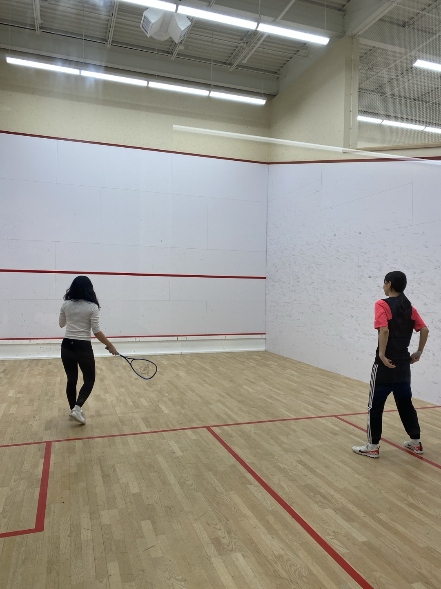
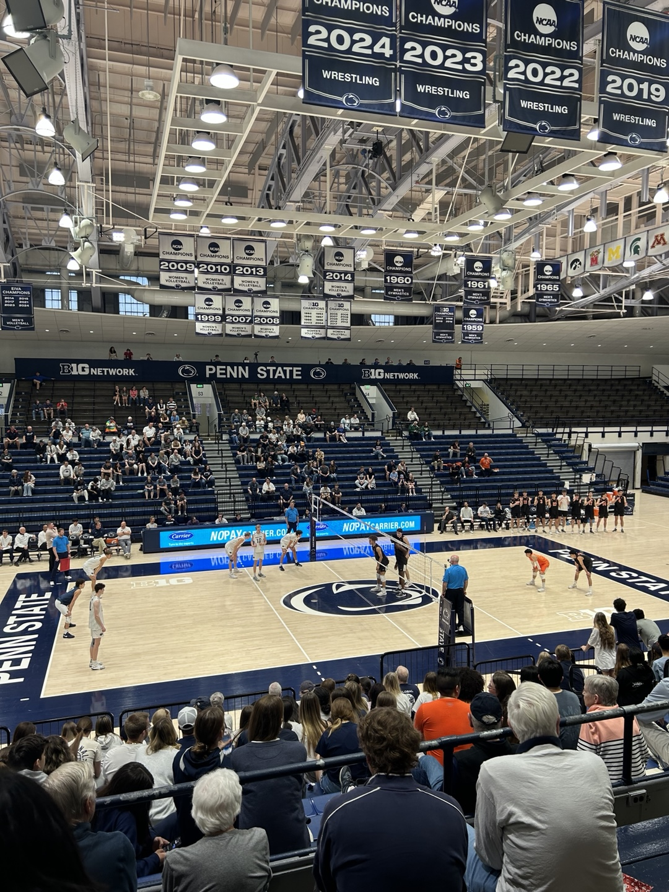
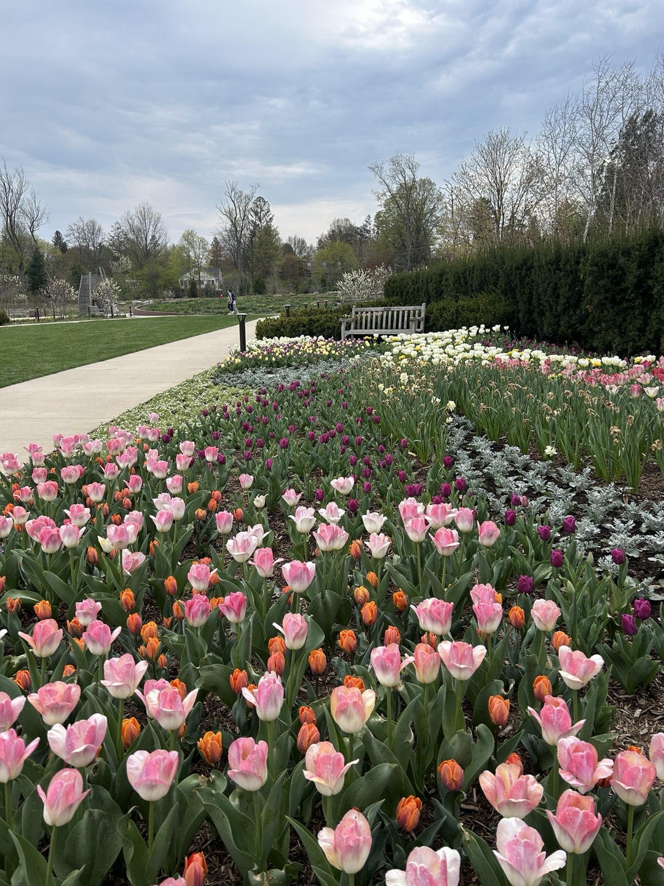

Course Registration & Classes
I chose my classes based on professor reviews from RateMyProfessor and the Penn State official site. You can find all available classes on LionPATH Class Search — there are literally thousands! At first, I registered for 18 credits, but later dropped a major course and added a sports course to have a more relaxed semester. Some classes are really heavy on workload, so I recommend balancing your schedule wisely.
Courses I Took
| Course | Title | Difficulty |
|---|---|---|
| DART102N | Intro to Digital Art | ★☆☆ |
| DART203 | 3D Digital Art and Design Fundamentals | ★★★ |
| GD110 | Intro to User Experience(UX) | ★★☆ |
| IST250 | Introduction to Web Design and Development | ★★★ |
| KINES25 | Raquet Sports | ★☆☆ |
| SOC119N | Race, Ethnicity and Culture | ★☆☆ |
Campus Facilities
- IM Building: The largest fitness center on campus. Offers gym, climbing, pickleball, badminton, and more. You can rent all equipment for free at the counter. I fell in love with pickleball and played almost every week! It's a fun, beginner-friendly sport.
- Other gyms: White Building and Rec Hall, with Rec Hall located right across from West dorms.
- Arboretum: Perfect for walks, sunset views, and snowball fights. There's also the Palmer Art Museum nearby. I went here often for a breath of fresh air.



How to Discover Events
- Check the Global Gazette — popular events fill up quickly!
- Follow club and department Instagram pages (e.g., Penn State Recreation, Dining, Arboretum).
- Explore open club events: orgcentral.psu.edu/events
- Use school sites/apps to find concerts, performances, and games.
Campus Events & Activities
- Involvement Fair: Club fair at the start of the semester. It's your best shot to sign up — don’t miss it!
- Free Skating: At the start of each semester, Pegula Ice Arena offers free skating sessions. There are also paid lessons and skating clubs available.
- Dorm Events: Many dorms organize their own fun activities. Keep an eye out!